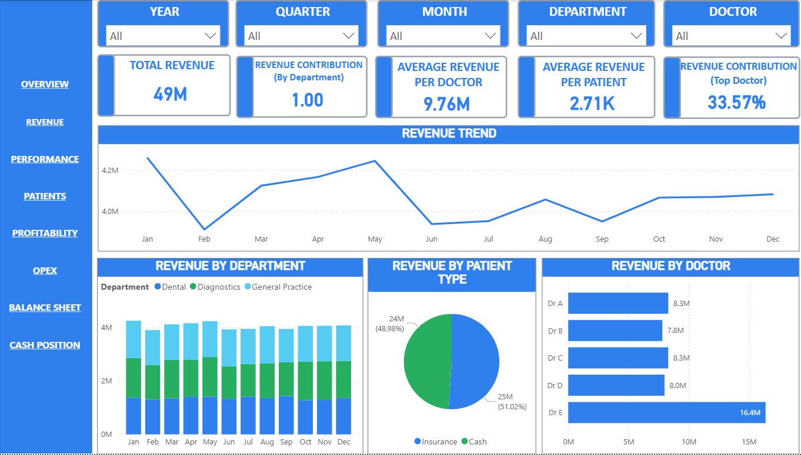
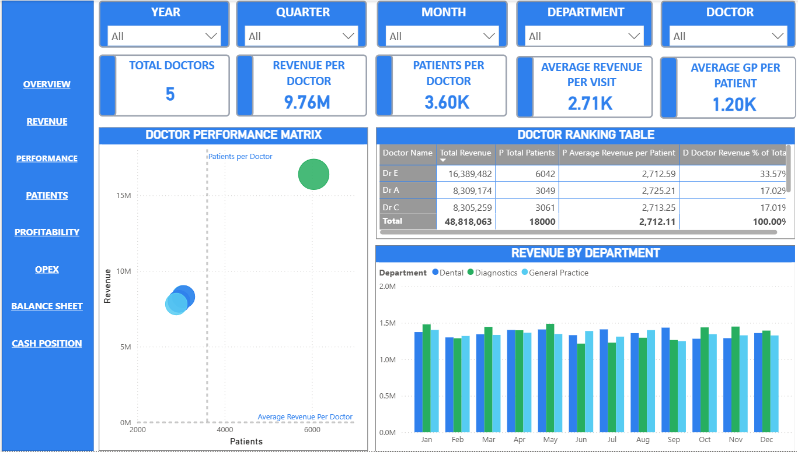
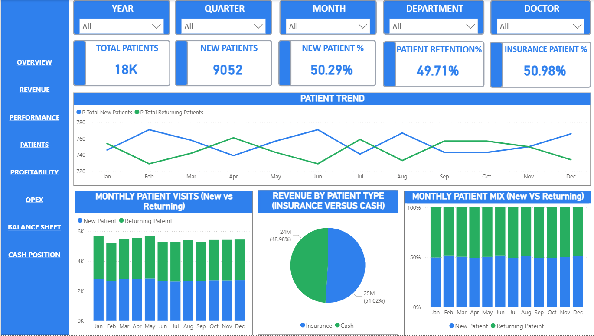
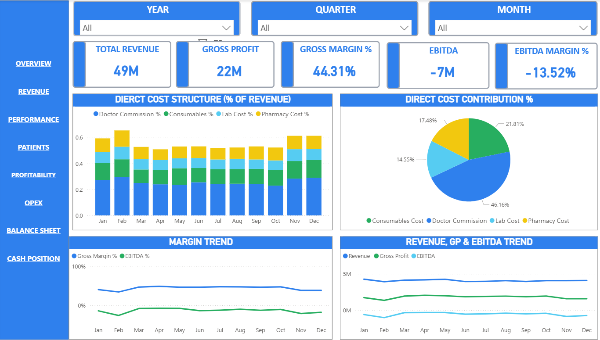
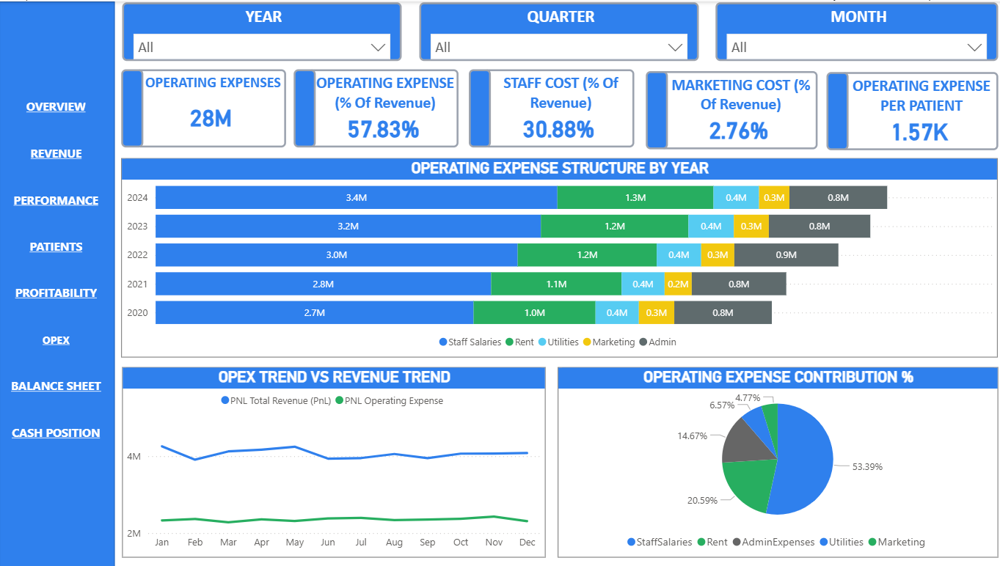
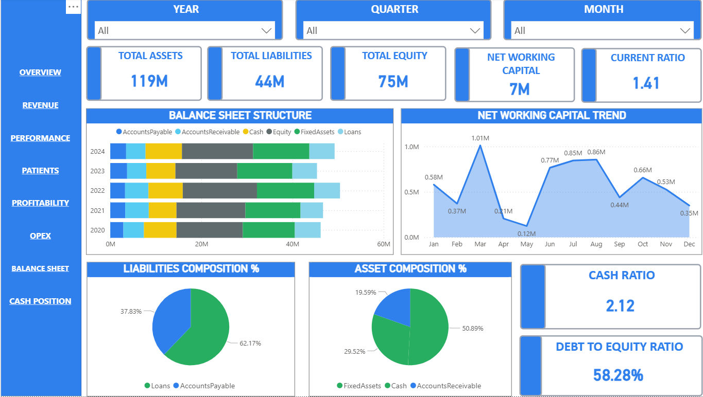
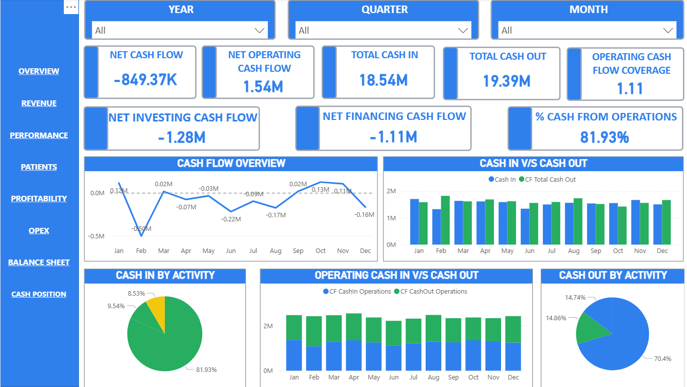

CLICK TO ENLARGE

screenshots/overview.pngA Power BI executive reporting solution showing how financial, operational and patient analytics can live in one centralized decision-support framework.
Built with Power BI, data modeling and DAX measures to demonstrate executive reporting, dashboard design and healthcare analytics.
Healthcare organizations often spread financial, operational and patient data across multiple systems, which makes executive reporting slow and inconsistent.
This demonstration project consolidates those reporting domains into a single Power BI analytics framework — improving visibility, keeping definitions consistent, and giving decision-makers a faster path from data to action.
Click any dashboard to view it full size.
screenshots/overview.png
screenshots/revenue.png
screenshots/performance.png
screenshots/patients.png
screenshots/profitability.png
screenshots/opex.png
screenshots/balancesheet.png
screenshots/cashposition.pngTrack revenue, expenses, gross profit and overall financial trends.
Compare financial contribution and performance across departments.
Monitor patient acquisition, retention and visit behavior.
Analyze cash movement and liquidity performance.
Centralized KPI monitoring through executive dashboards.
Review P&L, Balance Sheet and Cash Flow performance.